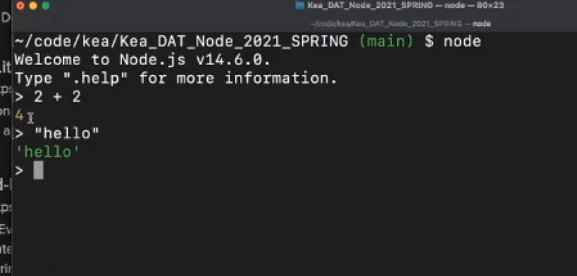
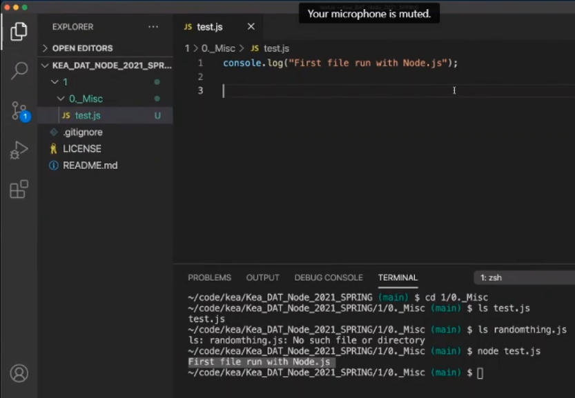
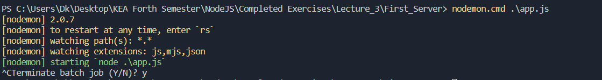

Introduction to NodeJS

Node.js is an open-source, cross-platform, back-end JavaScript runtime environment/platform that runs on the V8 engine and has everything to execute JavaScript code outside a web browser.

With Node you can create:
- Backend for websites
- Desktop applications
- Scripts
- Command-line interfaces/apps
- ETC.
Start working with NodeJS
Dowloading NodeJS
NodeJS can be downloaded through this link
Checking Node Version
You can check the Node version with node -v command in the terminal
Running Node
Node code can be run in 2 ways:
-
Through Node REPL
In terminal: $
node -
Through JavaScript file
In terminal: $
node [file_name]
Nodemon
Problem: When we make changes to a file, we have to restart the server each time to see the updated version.
Nodemon is a build tools which automatically restarts the server/node application and saves the code if we make changes in files . It is only used for development
We can run any type of file with nodemon: node app, regular file
We can install it two ways:
npm install nodemon / npm install --save-dev nodemon//nodemon will be saved locally and will aply only to particular applicationnpm install -g nodemon// this way nodemon will be installed globally on our computer and we wont have to install it for each project
Staring Nodemon
To start Nodemon we write in the terminal: nodemon/nodemon.cmd [file_name]
$ nodemon.cmd app.js
Exiting Nodemon
To exit Nodemon - press Ctrl + C and confirm (Y)
